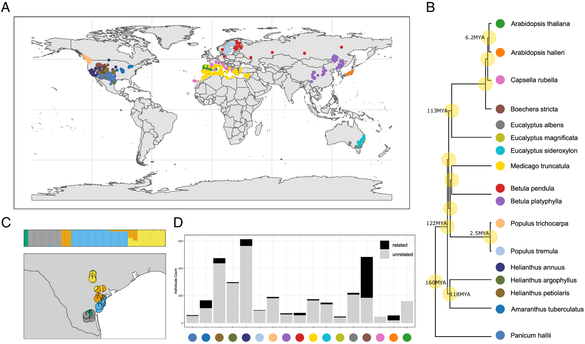
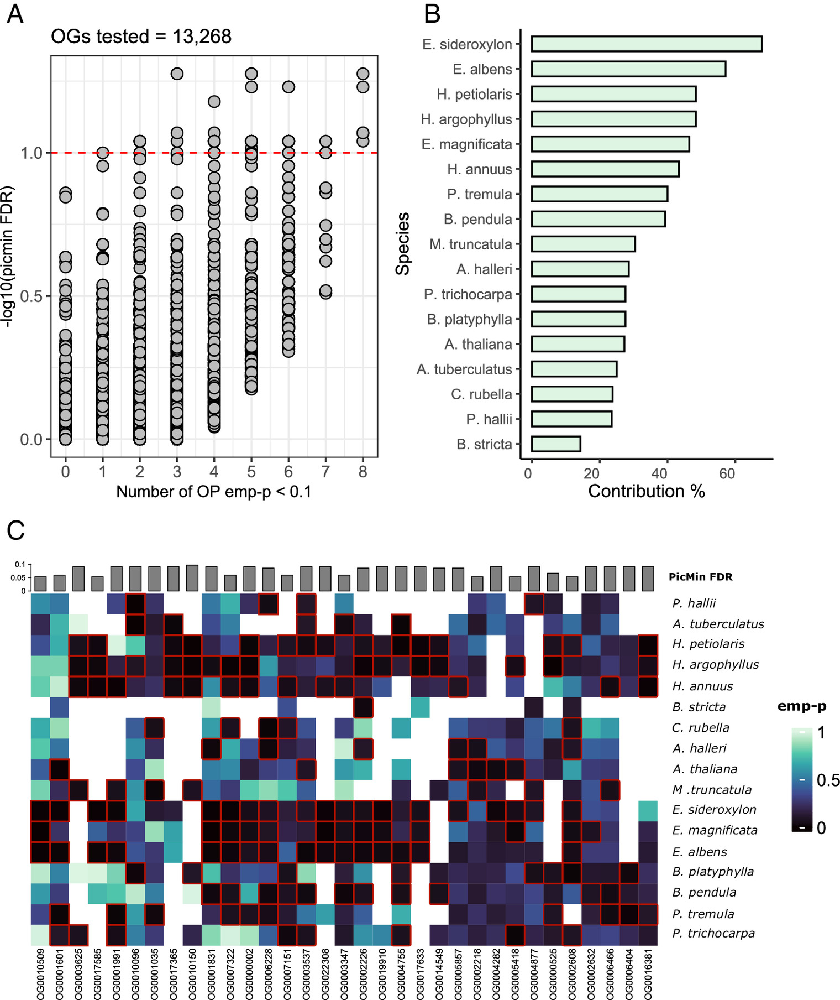

Results
The foundation of the RepAdapt idea comes from two papers published in 2024, looking at repeatability when it comes to local vs global adaptation. These analyses were done with a much smaller dataset than what we have access to now, but they provide a good starting point for futher analysis.
Repeated global adaptation across plant species. (Nocci et al. 2024)

Geographical distribution and relatedness within and among the study species. (A) Sampling locations of the 17 datasets included in the study. (B)Time-calibrated phylogenetic tree (retrieved from https://timetree.org/) of the 17 datasets, based on 12 reference species. (C) fastSTRUCTURE ancestry pie plot(K = 5) of the Helianthus argophyllus dataset in Texas (USA), showing substantial substructuring. (D) Relatedness filtering summary bar plot by dataset. Datasets labeled by corresponding color from B.
The global adaptation analysis has less species included due to the necessity of whole-genome sequencing for the analysis. However, geographical breadth is largely the same between the two studies and the same bioinformatics pipeline was largely used to allow for accurate comparison.

Evidence for repeated selectivesweeps across multiple species. (A)Distribution of PicMin FDR (−log10PicMin FDR on the Y axis) for the13,268 tested orthogroups, orderedby number of putative driving geneson the X axis (number of OmegaPlusemp-P < 0.1). Points above the redline have FDR < 0.1. (B) Speciescontribution to PicMin top candidates(FDR < 0.1), calculated for each speciesas: [number of empirical P-values < 0.1in the PicMin FDR < 0.1 orthogroups]/[total number of orthogroups withPicMin FDR < 0.1 tested]. (C) Heatmapof OmegaPlus empirical P-values for the33 candidate orthogroups (PicMin FDR< 0.1); driving genes cells (emp-P < 0.1 –black cells) are outlined in red, speciesare ordered by phylogenetic distancealong the Y axis. A white cell indicatesthat an orthogroup was not tested ina species.